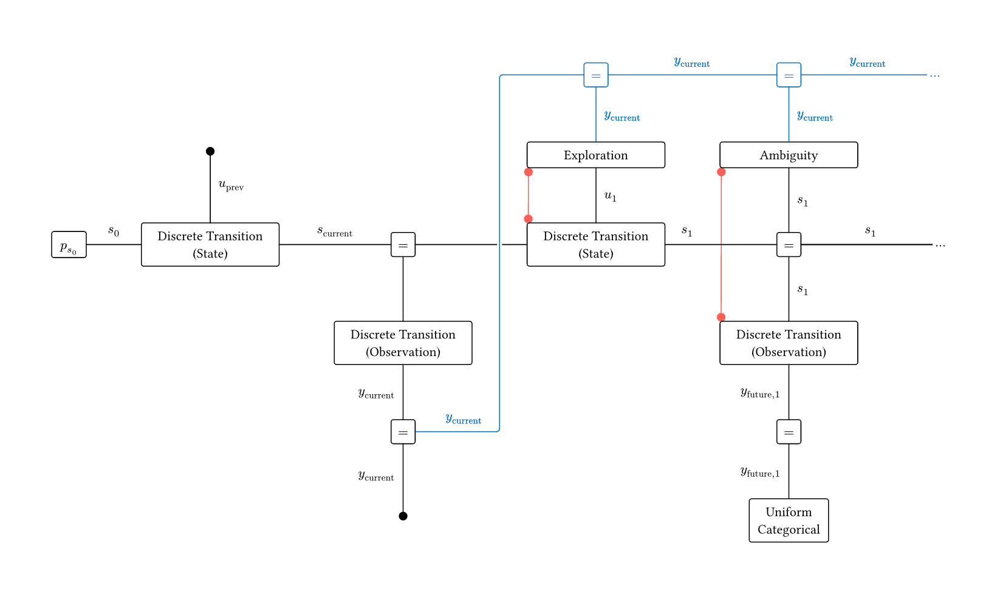
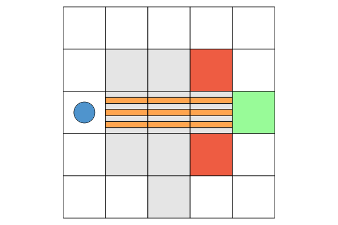

This example was automatically generated from a Jupyter notebook in the RxInferExamples.jl repository.
We welcome and encourage contributions! You can help by:
- Improving this example
- Creating new examples
- Reporting issues or bugs
- Suggesting enhancements
Visit our GitHub repository to get started. Together we can make RxInfer.jl even better! 💪
EFE Minimization via Message Passing
This notebook reproduces the methodology from the paper A Message Passing Realization of Expected Free Energy Minimization, which shows how Expected Free Energy minimization can be recast as Variational Free Energy minimization on factor graphs augmented with some epistemic priors, making it tractable via message passing.
The goal of this notebook is to build intuition for the core implementation ideas from the ground up. We only cover the stochastic maze environment here; the paper covers two additional ones. Since the code has been mostly rewritten for didactic purposes, it doesn't always follow the accompanying code repo conventions.
using Plots
using Base.Iterators
using LinearCombinations
using StableRNGs
using Distributions
using RxInfer
using Tullio
using LogExpFunctions: softmax, xlogx, xlogy
using LinearAlgebra: normalize!, normalize
import Pipe: @pipe as @pThe Stochastic Maze environment
A Stochastic Maze is a gridworld where an agent navigates toward a goal state, impeded by:
- sink states that trap the agent (
sink_states) - slippery cells where movement outcomes are uncertain (
stochastic_transitions) - cells where the agent's perception is unreliable (
noisy_observations)
We'll define how each of these work when we construct the transition and observation tensors. For now, let's build a concrete example:
Coord = CartesianIndex{2}
@kwdef struct Grid
indices :: CartesianIndices{2}
goal_state :: Coord
sink_states :: Vector{Coord}
stochastic_transitions :: Vector{Coord}
noisy_observations :: Vector{Coord}
end
example_grid = Grid(
indices = CartesianIndices((5, 5)),
goal_state = Coord(3,5),
sink_states = Coord.([(2,4), (4,4)]),
stochastic_transitions = Coord.([(3,2), (3,3), (3,4)]),
noisy_observations = Coord.([(2,2),(2,3),(2,4),(3,2),(3,3),(3,4),(4,2),(4,3),(4,4),(5,3)])
)Main.var"##WeaveSandBox#277".Grid(CartesianIndices((5, 5)), CartesianIndex(
3, 5), CartesianIndex{2}[CartesianIndex(2, 4), CartesianIndex(4, 4)], Carte
sianIndex{2}[CartesianIndex(3, 2), CartesianIndex(3, 3), CartesianIndex(3,
4)], CartesianIndex{2}[CartesianIndex(2, 2), CartesianIndex(2, 3), Cartesia
nIndex(2, 4), CartesianIndex(3, 2), CartesianIndex(3, 3), CartesianIndex(3,
4), CartesianIndex(4, 2), CartesianIndex(4, 3), CartesianIndex(4, 4), Cart
esianIndex(5, 3)])Since we define the grid in cartesian coordinates but our transition and observation tensors will require linear indices, here are a few utility functions to convert between the two:
to_linear(grid::Grid, coord::Coord) :: Int = LinearIndices(grid.indices)[coord]
to_cartesian(grid::Grid, coord::Int) :: Coord = grid.indices[coord]to_cartesian (generic function with 1 method)Let's draw our example grid: The goal is shown in green, sink states in red, stochastic transition cells as horizontally banded, and noisy observation cells in grey.
function depict(grid::Grid, player::Coord)
n_rows, n_cols = size(grid.indices)
# Helper function to create rectangles
rectangle(x, y, w, h) = Shape(x .+ [0, w, w, 0], y .+ [0, 0, h, h])
# Create the plot
p = plot(xlims=(0, n_cols), ylims=(0, n_rows), aspect_ratio=:equal,
grid=false, showaxis=false, ticks=false, legend=false
)
for idx in grid.indices
i, j = Tuple(idx)
x, y = j - 1, n_rows - i # Convert to plot coordinates
# Draw square with color based on cell type
color = idx in grid.sink_states ? :tomato2 :
idx == grid.goal_state ? :palegreen :
idx in grid.noisy_observations ? :grey90 : :white
plot!(p, rectangle(x, y, 1, 1), fillcolor=color)
# Draw stochastic transition bands
if idx in grid.stochastic_transitions
foreach(k -> plot!(p, rectangle(x, y + k/7, 1, 1/7), fillcolor=:tan1), [1, 3, 5])
end
# Draw player
if idx == player
scatter!(p, [x + 0.5], [y + 0.5], markersize=20, markercolor=:steelblue3)
end
end
return p
end
depict(example_grid, Coord(3,1))
Notice that there is a short path to the goal state, but it passes through the stochastic transition and noisy observation cells, so the agent risks being thrown off the path or losing track of its position, ultimately ending up in a sink state.
One of the main points of the paper is that an agent endowed with the additional epistemic priors we'll discuss later can recognize the risk and choose the longer and more secure path, while simpler agents (for example those endowed with KL-control) tend to take the shorter but riskier route.
Generation of the tensors
The state transition tensor
We model the agent's position as a hidden state $x_t$ evolving over time. In a POMDP, the transition dynamics are captured by the conditional distribution:
\[p(x_t \mid x_{t-1}, u_t)\]
We represent this by a tensor of size (n_states, n_states, n_actions), where entry [i, j, k] gives the probability of transitioning to state $i$ from state $j$ under action $k$.
The movement rules are straightforward: the agent moves freely in open cells, stays in place when hitting a wall, and in stochastic drift cells there is a 70% chance of being displaced one step up or down regardless of the intended direction.
@enum Direction South=1 North East West
CoordDelta = CartesianIndex{2}
function move(start::Coord, direction::Direction, g::Grid) :: Linear{Coord, Float64}
translation = Dict(South => CoordDelta(1, 0),
North => CoordDelta(-1, 0),
East => CoordDelta(0, 1),
West => CoordDelta(0, -1))
destination = start + translation[direction]
destination in g.indices ? Linear(destination => 1.0) : Linear(start => 1.0)
end
function stochastic_drift(start::Coord, g::Grid) :: Linear{Coord, Float64}
up = move(start, North, g)
down = move(start, South, g)
1/2 * (up + down)
end
function movement_tensor(grid :: Grid)
n_states = length(grid.indices)
n_actions = length(instances(Direction))
movement = zeros((n_states, n_states, n_actions))
for (source, direction) in product(grid.indices, instances(Direction))
if source in grid.stochastic_transitions
destinations = 0.3 * move(source, direction, grid) + 0.7 * stochastic_drift(source, grid)
elseif source in grid.sink_states
destinations = Linear(source => 1.0)
else
destinations = move(source, direction, grid)
end
for (destination, weight) in destinations
movement[to_linear(grid, destination), to_linear(grid, source), Int(direction)] = weight
end
end
return movement
endmovement_tensor (generic function with 1 method)A plot of the four slices of the transition tensor, according to the chosen action:
plots = [heatmap(movement_tensor(example_grid)[:,:,i], title="$(instances(Direction)[i])") for i in 1:4]
plot(plots..., layout=(2,2), size=(700, 600))
The observation tensor
We model observations as a conditional distribution over perceived states given the true hidden state:
\[p(o_t \mid x_t)\]
We represent this as a tensor of size (n_states, n_states), where entry [i, j] gives the probability of observing state $i$ when the true state is $j$.
In normal cells the agent perceives its position accurately, while in noisy observation cells it perceives the correct position only 20% of the time, and with 80% probability observes one of the adjacent reachable states (including diagonals).
function adjacent(coord::Coord, grid::Grid) :: Vector{Coord}
deltas = [Coord(i, j) for i in -1:1 for j in -1:1 if (i, j) != (0, 0)]
coords = [coord + delta for delta in deltas if coord + delta in grid.indices]
end
function exact(x :: T) :: Linear{T} where {T}
Linear(x => 1)
end
function linear_combination(xs :: Vector{T}) :: Linear{T} where {T}
sum(exact.(xs) * (1 / length(xs)))
end
function observation_tensor(grid :: Grid)
n_states = length(grid.indices)
obss = zeros(n_states, n_states)
for source in grid.indices
if source in grid.noisy_observations
observations = 0.2 * exact(source) + 0.8 * linear_combination(adjacent(source, example_grid))
else
observations = exact(source)
end
for (observation, weight) in observations
obss[to_linear(grid, observation), to_linear(grid, source)] = weight
end
end
return obss
endobservation_tensor (generic function with 1 method)A plot of the observation tensor. We can directly observe the uncertainty in noisy observation states.
observation_tensor(example_grid) |> heatmap
Environment step
With the transition and observation tensors defined, we can now implement the environment, which at each timestep samples the next true state from the transition distribution, and a corresponding observation.
function sample_state(rng, grid::Grid, state::Coord, dir::Direction)
@p state |> to_linear(grid, _) |> movement_tensor(grid)[:,_,Int(dir)] |> Categorical |> rand(rng, _) |> to_cartesian(grid, _)
end
function sample_observation(rng, grid::Grid, agent_pos::Coord)
@p agent_pos |> to_linear(grid, _) |> observation_tensor(grid)[:,_] |> Categorical |> rand(rng, _) |> to_cartesian(grid, _)
end
function world_step(rng, grid::Grid, player::Coord, direction::Direction)
next_state = sample_state(rng, grid, player, direction)
observation = sample_observation(rng, grid, next_state)
return next_state, observation
endworld_step (generic function with 1 method)For example here the agent tries to move East while starting in $(3,2)$, which is a stochastic transition state. So it ends up going North instead, to $(2,2)$. Since the destination is also a noisy observation cell, it perceives itself in $(1,1)$!
world_step(StableRNG(0), example_grid, CartesianIndex(3,2), East)(CartesianIndex(2, 2), CartesianIndex(1, 1))The model
Model definition
We are ready to construct the model for the agent. The agent has to infer its current state from the most recent observation, and plan over a horizon of length T. While the state inference part is standard, the planning part contains the key insight of the paper: two carefully chosen priors are added to the model, one over actions and the other over states.
The first encodes the expectation that the agent will favor actions that encourage exploration (i.e. maximize the entropy of the transition). In the code, the node responsible for this calculation is thus called Exploration. If $q(x_t | x_{t-1}, u_t)$ is the variational transition distribution, and $H_q$ its entropy, we would like a prior for action $u$ proportional to
\[H_q[x_t | x_{t-1}, u_t = u]\]
Note that, by the chain rule of conditional entropy, the quantity is equal to:
\[H_q[x_t, x_{t-1} | u_t = u] - H_q[x_{t-1} | u_t = u]\]
which is why the paper writes:
\[u_t \sim \text{Cat}(u_t |\sigma(H[q(x_t,x_{t-1}|u_t)] - H[q(x_{t-1}|u_t)]))\]
where the $\sigma$ function (softmax) normalizes the distribution.
The prior over states encodes the expectation that the agent will tend to occupy states where its observations are reliable (i.e. that minimize the entropy of the observation). The effect is a bias away from ambiguity, and it is why the node responsible for the computation is called Ambiguity. As before, if $q(y_t | x_t)$ is the variational observation distribution, and $H_q$ its entropy, we would like a prior for state $x$ proportional to:
\[- H_q[y_t | x_t = x]\]
which the paper writes as:
\[x_t \sim \text{Cat}(x_t | \sigma(-H[q(y_t|x_t)]))\]
@model function efe_stochastic_maze_agent(A, B, p_s_0, y_current, u_prev, T, n_states, n_actions, goal)
# Prior initialization
s_0 ~ p_s_0
# State inference (filtering)
s_current ~ DiscreteTransition(s_0, B, u_prev)
y_current ~ DiscreteTransition(s_current, A)
# Planning (Active Inference)
s_prev = s_current
for t in 1:T
state_meta = JointMarginalMeta(Contingency(ones(size(B))))
u[t] ~ Exploration(y_current) where {meta=state_meta}
s[t] ~ DiscreteTransition(s_prev, B, u[t]) where {meta=state_meta}
observation_meta = JointMarginalMeta(Contingency(ones(size(A))))
s[t] ~ Ambiguity(y_current) where {meta=observation_meta}
y_future[t] ~ DiscreteTransition(s[t], A) where {meta=observation_meta}
y_future[t] ~ Categorical(fill(1 / n_states, n_states))
s_prev = s[t]
end
s[end] ~ goal
endThe figure below shows the factor graph for the state inference part and the first planning step (the planning structure repeats for each subsequent step):

Two aspects of this implementation deserve clarification.
Firstly, we know that, to compute the priors, the Exploration and Ambiguity nodes need to know the joint distribution in the respective DiscreteTransition nodes. But that transfer of information is not an edge in the factor graph (edges are for variables shared between factors). So instead stateful back-channels, in the form of the meta arguments, are used. This is marked in red in the diagram.
Secondly, the Exploration and Ambiguity nodes seem to be taking y_current as input, which they don't need. That is needed because by default, RxInfer only computes the value of a node if it has at least one reactive input. Since the Exploration and Ambiguity nodes have no natural inputs in the graph, they would never be triggered. To work around this, the authors introduced an artificial dependency on y_current, marked in blue in the diagram.
Both workarounds are known limitations of the current RxInfer implementation.
Stateful container containing the joint categorical
A JointMarginalMeta is a mutable container, that we use it to store a Contingency, which is a joint categorical over multiple discrete variables (defined in RxInfer).
mutable struct JointMarginalMeta{C}
joint_marginal::C
end
function set_marginal!(jmm::JointMarginalMeta{C}, marginal::C) where {C}
jmm.joint_marginal = marginal
return jmm
endset_marginal! (generic function with 1 method)Additional @marginalrules for DiscreteTransitions
Now we'll implement the mechanism with which the DiscreteTransition nodes store the joint marginal information in the JointMarginalMeta.
This @marginalrule is for a joint marginal over two variables (as in the observation tensor case). The rule fires when the meta parameter is a JointMarginalMeta and uses the rule that's already in the ReactiveMP.jl implementation.
RxInfer.ReactiveMP.sdtype(any::RxInfer.ReactiveMP.StandaloneDistributionNode) = ReactiveMP.Stochastic()
@marginalrule DiscreteTransition(:out_in) (m_out::Categorical,
m_in::Categorical,
q_a::PointMass{<:AbstractArray{T,2}},
meta::JointMarginalMeta) where {T} = begin
marginal = @call_marginalrule DiscreteTransition(:out_in) (m_out=m_out, m_in=m_in, q_a=q_a, meta=nothing)
set_marginal!(meta, marginal)
return marginal
endFor a joint marginal over three variables (as in the transition tensor case), we define two @marginalrule implementations: the one that does the actual computation, which is not present in ReactiveMP, and the one that stores the result in the JointMarginalMeta.
@marginalrule DiscreteTransition(:out_in_T1) (m_out::Categorical,
m_in::Categorical,
m_T1::Categorical,
q_a::PointMass{<:AbstractArray{T,3}},
meta::Any) where {T} = begin
@tullio result[a, b, c] := q_a.point[a, b, c] * probvec(m_out)[a] * probvec(m_in)[b] * probvec(m_T1)[c]
normalize!(result, 1)
return Contingency(result, Val(false))
end
@marginalrule DiscreteTransition(:out_in_T1) (m_out::Categorical,
m_in::Categorical,
m_T1::Categorical,
q_a::PointMass{<:AbstractArray{T,3}},
meta::JointMarginalMeta) where {T} = begin
marginal = @call_marginalrule DiscreteTransition(:out_in_T1) (m_out=m_out, m_in=m_in, m_T1=m_T1, q_a=q_a, meta=nothing)
set_marginal!(meta, marginal)
return marginal
endExploration and Ambiguity nodes
We now implement the Exploration node. We have to compute:
\[H_q[x_t | x_{t-1}, u_t = u]\]
Recall that conditional entropy is defined as:
\[H_p[A|B] = - \sum_{a, b} p(a, b) \log p(a|b)\]
struct Exploration end
@node Exploration Stochastic [out, in]
function conditional_entropy(x)
h = sum(x, dims=1)
@tullio res := - (xlogx(x[a,b]) - xlogy(x[a,b], h[b]))
end
@rule Exploration(:out, Marginalisation) (q_in::Any, meta::JointMarginalMeta,) = begin
slices = @p meta.joint_marginal |> components |> eachslice(_, dims=3) |> normalize.(_, 1)
entropies = conditional_entropy.(slices)
return Categorical(softmax(entropies))
endFor the Ambiguity node, we have to compute:
\[- H_q[y_t | x_t = x]\]
struct Ambiguity end
@node Ambiguity Stochastic [out, in];
@rule Ambiguity(:out, Marginalisation) (q_in::Any, meta::JointMarginalMeta,) = begin
slices = @p meta.joint_marginal |> components |> eachslice(_, dims=2) |> normalize.(_, 1)
entropies = entropy.(slices)
return Categorical(softmax(-entropies))
endAgent step
We can now create a function that advances the agent by one timestep, instantiating the model, running inference, extracting the first planned action and the updated state belief from the posterior distributions.
function model_step(; grid::Grid, observation::Coord, current_belief, time_remaining::Int, previous_action::Union{Direction, Nothing})
n_states = length(grid.indices)
n_actions = length(instances(Direction))
onehot(x::Int, n::Int) = Int.(1:n .== x)
goal_ohe = @p grid.goal_state |> to_linear(grid, _) |> onehot(_, n_states) |> Categorical
previous_action_ohe = isnothing(previous_action) ? [0, 0, 0, 0] : (@p previous_action |> Int |> onehot(_, n_actions))
observation_ohe = @p observation |> to_linear(grid, _) |> onehot(_, n_states)
# Run inference
result = infer(;
model = efe_stochastic_maze_agent(
A = observation_tensor(grid),
B = movement_tensor(grid),
p_s_0 = current_belief,
T = time_remaining,
n_states = n_states,
n_actions = n_actions,
goal = goal_ohe),
data=(
y_current = observation_ohe,
u_prev = previous_action_ohe
),
initialization = (@initialization begin (s) = vague(Categorical, n_states) end),
options = (force_marginal_computation=true,),
iterations = 10,
)
get_last_iteration = last
get_first_action = first
next_action = @p result.posteriors[:u] |> get_last_iteration |> get_first_action |> mode |> Direction
new_belief = @p result.posteriors[:s_current] |> get_last_iteration
return next_action, new_belief
endmodel_step (generic function with 1 method)Running the simulation
Finally, we can run the whole simulation. We initialize four quantities: the agent's true position, its belief over the hidden state, the action it will take, and the observation returned by the environment, updating them at each iteration. At each timestep, we run one agent inference and one environment simulation, until the agent reaches the goal state or the time horizon is exhausted.
function run_stochastic_maze_simulation(; seed, grid, initial_agent_pos)
rng = StableRNG(seed)
time_horizon = 11
n_states = length(grid.indices)
agent_pos = initial_agent_pos
agent_belief = Categorical(fill(1.0 / n_states, n_states))
next_action = nothing
observation = sample_observation(rng, grid, initial_agent_pos)
episode_data = Dict(
"actions" => Direction[],
"states" => Coord[],
"observations" => Coord[],
"seed" => seed
)
push!(episode_data["states"], initial_agent_pos)
push!(episode_data["observations"], observation)
for t in time_horizon:-1:1
# The agent decides on an action
next_action, agent_belief = model_step(
grid = grid,
observation = observation,
current_belief = agent_belief,
time_remaining = t,
previous_action = next_action
)
# The world reacts
agent_pos, observation = world_step(rng, grid, agent_pos, next_action)
push!(episode_data["actions"], next_action)
push!(episode_data["states"], agent_pos)
push!(episode_data["observations"], observation)
if agent_pos == grid.goal_state break end
end
episode_data["final_state"] = agent_pos
episode_data["seed"] = seed
return episode_data
end
episode_data = run_stochastic_maze_simulation(seed=123, grid=example_grid, initial_agent_pos=Coord(3,1))Dict{String, Any} with 5 entries:
"observations" => CartesianIndex{2}[CartesianIndex(3, 1), CartesianIndex(
2, 1…
"actions" => Direction[North, North, East, East, East, East, South,
Sout…
"seed" => 123
"states" => CartesianIndex{2}[CartesianIndex(3, 1), CartesianIndex(
2, 1…
"final_state" => CartesianIndex(3, 5)Let's create an animation to visualize the agent's trajectory. Modify the grid definition or the agent's starting position to experiment with different scenarios. Keep in mind that planning has a fixed time horizon, and you might need to increase it to allow the agent to reach the goal safely.
animation = @animate for agent_pos in episode_data["states"]
depict(example_grid, agent_pos)
end
gif(animation, "simulation.gif", fps=4, show_msg = false);
This example was automatically generated from a Jupyter notebook in the RxInferExamples.jl repository.
We welcome and encourage contributions! You can help by:
- Improving this example
- Creating new examples
- Reporting issues or bugs
- Suggesting enhancements
Visit our GitHub repository to get started. Together we can make RxInfer.jl even better! 💪
This example was executed in a clean, isolated environment. Below are the exact package versions used:
For reproducibility:
- Use the same package versions when running locally
- Report any issues with package compatibility
Status `/tmp/jl_psgPRK/Project.toml`
[31c24e10] Distributions v0.25.129
[67be3549] LinearCombinations v0.4.3
⌅ [2ab3a3ac] LogExpFunctions v0.3.29
[b98c9c47] Pipe v1.3.0
[91a5bcdd] Plots v1.41.6
[86711068] RxInfer v5.5.0
[860ef19b] StableRNGs v1.0.4
[bc48ee85] Tullio v0.3.9
[37e2e46d] LinearAlgebra v1.12.0
Info Packages marked with ⌅ have new versions available but compatibility constraints restrict them from upgrading. To see why use `status --outdated`